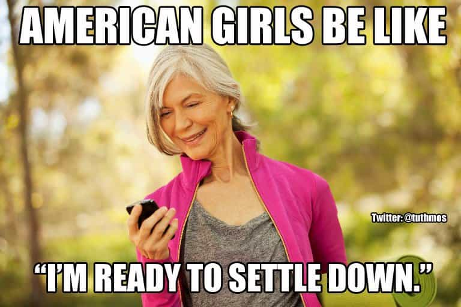

Troy is a game veteran of a decade's standing, and a lover of women, literature, travel and freedom. He is also the author of The Seven Laws of Seduction. Visit his website at Troy Francis.


A common criticism of the ‘dark art’ of game is that it is all about guys discovering manipulative tricks so that they can get as many girls as possible into bed. Actually, this is often not the case. A great many men are attracted to it simply because they want to meet a girl with whom they can form a relationship.
Some might say that it is the most laudable motivation there is, but the counter-intuitive truth is that if you approach her with the mindset that ‘I want to get a girlfriend’ then you will most likely fail. The dating marketplace being what it is you must first generate attraction and great sex: relationships come later and should be initiated by the woman.
Through social conditioning we are inculcated with the belief that the best way to get a girlfriend is through comfort. That is, if I am friendly and pleasant and treat the girl that we like with the utmost respect then she will see what a great guy I am and fall in love with me. If only it were really that simple. This might be what girls say they would prefer, but real-life experience teaches us something different.
As you will no doubt be aware by now if you have any knowledge of game at all, such a strategy is doomed to failure and any guy attempting it will almost certainly find himself languishing in the friendzone. Why? Because girls—like men—respond to what they find sexy, and being nice just isn’t.

This is common knowledge by now (in the community at least) and most guys understand it on an intellectual level. Nevertheless, I often notice a kind of ‘purple pill’ doublethink going on, even in more experienced players. ‘Yes,’ they might say, ‘I know this game stuff—being the bad guy and all that—works well on club sluts and random girls. But when I meet someone who I want to be in a relationship with then I should do things differently.’
No, you shouldn’t. Here’s why. Every single long-term relationship I’ve been in started off on a ‘just sex’, ‘friends-with-benefits’ footing. Meanwhile, every single girl I ever pursued to become my girlfriend (back when I used to do that kind of thing) rejected me outright.
I only represent a sample size of one. But I’d be willing to bet that my experience reflects that of most other men. Certainly this has been my experience speaking with, and coaching, other guys.
As an example, I met my last girlfriend L through Tinder. At the time she has fairly recently come out of a long-term relationship, and she told me straight-up that she wasn’t looking for anything serious. Well, that was fine with me. We’d meet up once a week, have sex, maybe hang out a bit after, and that would be it.
Over the course of a few months of this L and I got to know one another better and discovered that—apart from having great sex—we also had a few other things in common too. We began hanging out more. After a while—when she pushed the issue—we finally became boyfriend and girlfriend.
Now, for various reasons that relationship didn’t work out and we no longer see one another—largely because I realised that the lifestyle she wanted wasn’t for me at this point. But the principle holds good. In this climate, the best way today to get a girlfriend is to attract her, begin a sexual relationship with her and then wait for her to move things forward.
Had I approached L trying to make her my girlfriend then I would almost certainly have failed. And yet L was far from being some stereotypical ‘club slut’. She was actually a very well-brought up girl who—it turned out—was very loyal and wanted nothing more than a conventional life. But I remember her showing me text messages from an unfortunate former lover of hers who had pushed the ‘relationship’ button too early and been blown off as a result.
From a male perspective it’s hard to make sense of this. If in the end a girl wants marriage and kids then why wouldn’t putting yourself forward as one who might provide these things work just fine? But the counterintuitive truth is that you must always present yourself as the lover before you switch to provider mode (assuming that’s what you want to do).
There are several reasons for this. For one, we live in a hyper-sexualised culture in the West and all of us, men and women, are encouraged to seek out ‘great sex’. Yes, sex is no longer just another part of a functional relationship. Now it has been elevated almost to the position of an Olympic sport, and if you’re not winning gold every time then you’re doing something wrong.
As such, girls are led to think that there is a greater ‘connection’ with men with whom they have intense orgasms. Logically that is not a particularly sound criteria on which to plan a future, but there it is. There is also, of course, the more workaday factor that girls, like us, get hooked on great sex. So for these reasons you must bang her—and bang her good, over a period of time—before you should even think about making her your girlfriend.
The other thing is that no one likes to be given anything on a plate. What we receive too easily we tend to end up despising. This is why it is a far better strategy to hang back and wait for her to push you to formalise what you have as a relationship. And don’t worry—she will. Girls always do, in time.

With L I came to the realisation that I liked spending time with her and wouldn’t be averse to trying a relationship. But at the same time I have also always valued my freedom, and I was actually rather enjoying having the best of both worlds—sex on tap and female company without the concomitant commitment. So my strategy was to do nothing. Sure enough, after a time L began dropping bigger and bigger hints about our becoming a couple.
So if you are getting into game because you want to get a girlfriend then realise that you are coming at it the wrong way. The first thing you need to do is get good at generating attraction in a wide variety of girls, so that you have a sense of abundance. Next you need to learn to escalate things to a sexual level, and to deliver the goods in bed. And then finally you need to develop the discipline to hang back and let her pursue you. Far better to do that than to push the relationship envelope too early and have her reject you.
For a compilation of all Troy’s best game writing, advice and techniques from the last four years buy his new book How To Get Hot Girls Into Bed.
Read Next: Why Being Good Looking Is Not Enough To Be Successful With Women